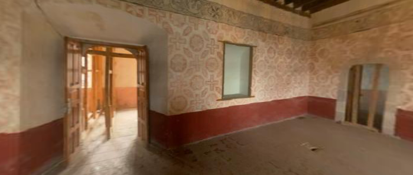

La biblioteca
Después de dejar la celda, donde el fraile encontraba un espacio para la oración personal, el estudio y el necesario descanso físico, nuestro recorrido continúa hacia otro lugar fundamental de la vida conventual: la biblioteca.
Desde los orígenes de la Orden de Predicadores, el estudio ha ocupado un lugar esencial en la vocación dominicana. Santo Domingo quiso que sus frailes se prepararan para anunciar el Evangelio, y para ello era necesario conocer profundamente la Sagrada Escritura, la teología y aquellas disciplinas que ayudaran a comprender mejor la fe y la realidad del mundo al que eran enviados.
La biblioteca era, por tanto, mucho más que un lugar donde se guardaban libros. Era un espacio de lectura, reflexión y búsqueda de la verdad. Entre sus muros, los frailes podían profundizar en aquello que habían escuchado en la oración, preparar la predicación y alimentar intelectualmente la misión que después realizarían entre la gente.
En la espiritualidad dominicana, oración y estudio se encuentran profundamente unidos. El fraile contempla la verdad en la oración, la profundiza mediante el estudio y después la comparte por medio de la predicación.
Por eso, para un dominico, estudiar nunca significa simplemente acumular conocimientos. El estudio está al servicio de una misión: buscar la verdad para poder comunicarla. De esta manera cobra especial sentido una expresión que resume profundamente el espíritu de la Orden: contemplar y dar a los demás lo contemplado.
La biblioteca después del sismo

La biblioteca durante los trabajos de restauración posteriores al sismo de 2017.
La narración intentará comenzar automáticamente. Si Safari la bloquea, pulsa el botón.